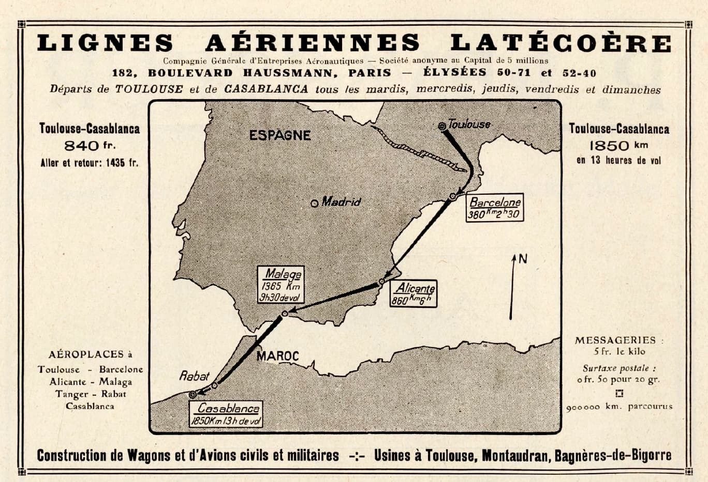
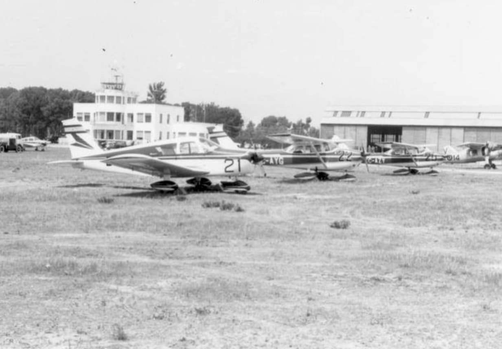
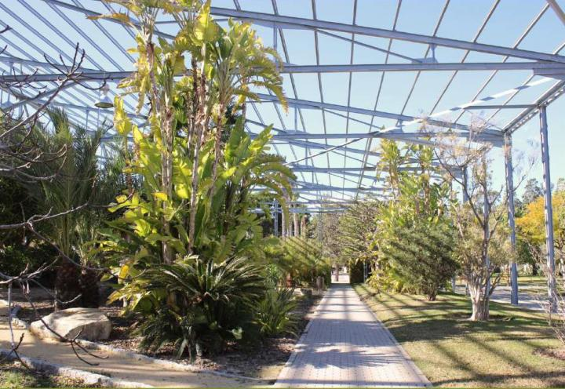
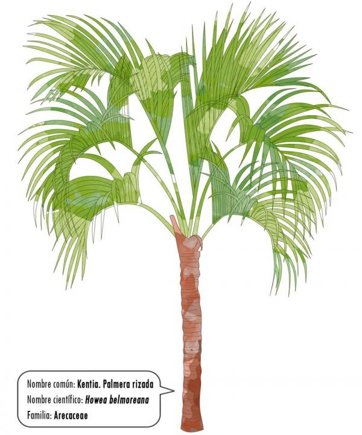
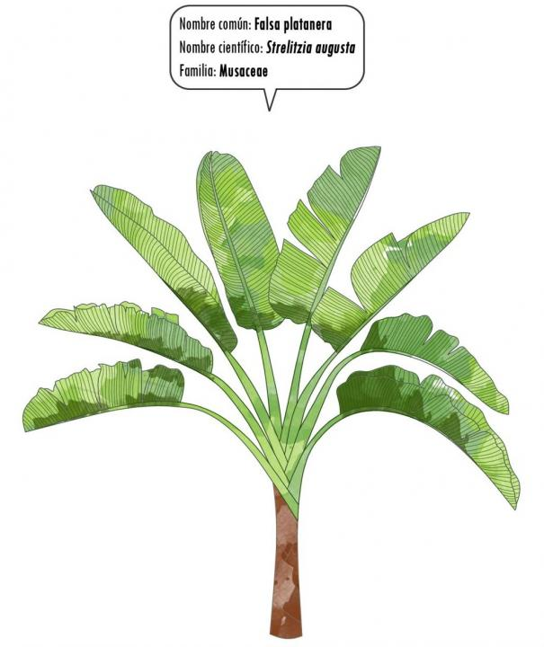
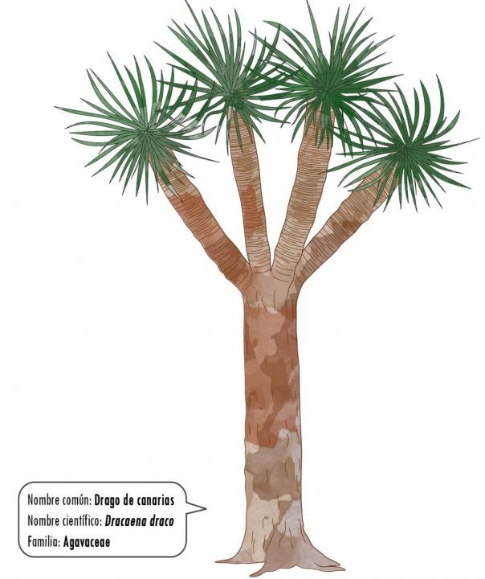
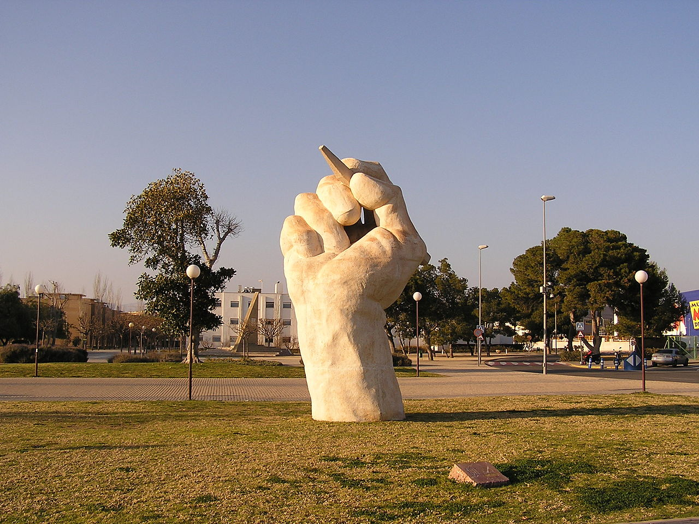

PARADA 2. TORRE DE CONTROL Y HANGAR
En 1919, las Líneas Aéreas Latécoère usaban a Alicante como escala en la línea de Toulouse-Casabalanca y también como línea regular de Alicante-Orán. Seguramente, Antoine de Saint-Exupéry, autor de El Principito, aterrizara aquí ya que trabajaba para esta aerolínea. Hay un capítulo de este libro dedicado a la Geografía, aquí tienes un trocito:
¿Qué es un geógrafo?
Es un sabio que sabe dónde están los mares, los ríos, las ciudades, las montañas y los desiertos.
Las geografías -dijo el geógrafo- son los libros más preciados e interesantes; nunca pasan de moda. Es muy raro que una montaña cambie de sitio o que un océano quede sin agua. Los geógrafos escribimos sobre cosas eternas.
Geografía del paisaje, Geografía urbana, análisis de los cambios de usos del suelo, también son ramas de la Geografía. A continuación, te contamos las distintas actividades que tuvieron lugar en este espacio hasta la creación de la universidad en 1978.
1936, aeródromo de Rabassa
1937, base aérea de la República durante la Guerra Civil
1938, se construye el hangar
1939, se crea el Ejército del AIre y se integra el aeródromo en la Región Aérea de Levante
1939-1940, torre de control y pabellones
A finales de 1950 tiene un uso militar y civil. Poco a poco, abandona su función (construcción del aeropuerto civil de El Altet) y pasa a ser Aeroclub de Alicante hasta 1978.


El edificio de la Torre de control fue usado como cafetería universitaria y copistería durante muchos años, hasta que definitivamente, en la primera década del nuevo siglo, se trasladaron servicios de la universidad.
En 1990, se desmantela el hangar dejando la estructura metálica y creando el Palmetum, un espacio tranquilo y de relax dentro de la universidad en el que podemos encontrar especies vegetales alóctonas de la Comunidad Valenciana.
Kentia. Palmera rizada. Howea belmoreana (especie endémica de la Isla Lord Howe, Australia)
Falsa platanera. Strelitzia augusta (especie africana)
Drago de canarias. Dracaena draco (especie macaronésica o islas del Atlántico Norte) https://www.biodiversidadcanarias.es/biota/especie/F02220
Dypsis decaryi (especie de Madagascar)
Brahea armata (especie endémica de Baja California, México)
Phoenix reclinata (trópicos de África, la Península arábiga, Madagascar y las Islas Comores)
Cycas revoluta (sur del Japón, fósil viviente ya existía antes de los dinosaurios, 300 millones de años, es altamente tóxica)

Vista de El Palmetum en el antiguo hangar. https://web.ua.es/es/vr-infraestructures/infraestructuras-medioambiente/documentos/publicacion-sobre-el-paisaje-de-la-universidad-de-alicante/paisaje-1.pdf

https://web.ua.es/es/vr-infraestructures/infraestructuras-medioambiente/documentos/publicacion-sobre-el-paisaje-de-la-universidad-de-alicante/paisaje-2.pdf

https://web.ua.es/es/vr-infraestructures/infraestructuras-medioambiente/documentos/publicacion-sobre-el-paisaje-de-la-universidad-de-alicante/paisaje-2.pdf

https://web.ua.es/es/vr-infraestructures/infraestructuras-medioambiente/documentos/publicacion-sobre-el-paisaje-de-la-universidad-de-alicante/paisaje-2.pdf
Curiosidad: Escultura de José Díaz Azorín “Dibujando el espacio” (1998), conocida popularmente como “La Mano”, se ha convertido en punto de encuentro y símbolo de la UA. Es visible desde el punto en el que nos encontramos.

Más información en:
http://www.alicantevivo.org/2007/03/alicante-en-el-recuerdo-60-el-aerodromo.html
https://www.aeroclubalicante.com/es/informacion/historia-del-real-aeroclub-de-alicante/